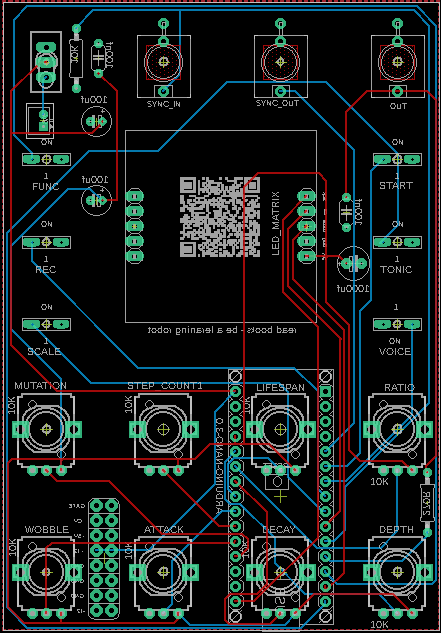
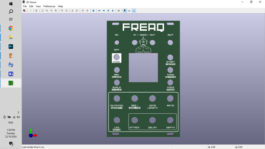
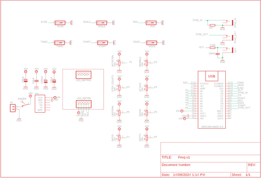

In my last build I made the awesome Mutant Synth. If you thought that project was good then wait to you see/hear the Freaq FM Synth!
First and foremost - I need to do a huge shoutout to MeeBleeps who designed this amazing synth.
All I'm doing is creating a PCB and front panel of my own and solving a few issues that I encountered.
The following Instructable will take you step by step on how you can build your own.
I've included all of the files needed including the gerber files for the PCB and front panel along with the Arduino sketch which you can find in my Github
The front panel is a Eurorack design so if you are into modular synths then this synth would fit perfectly into your rack!
It can be run from 12V power supply and also has a power connector used on on Euroracks.
It also can be used as a standalone synth and hand on heart, holds up to most mini synths you can buy.
The plan with these builds is to make my own dumbed down Eurorack which will contain a number of modules all running from 9V power supply.
This will include a drum synth, looper, power rail and mixer.
At the moment I have the Mutant and Freaq completed and will post on Instructables the rest of the modules and final build once ready.
Hang-on I haven't even talked about what the Freq can do.
The Freaq features dual independent 2-operator FM voices paired with a 2-track generative sequencer.
You can stack the voices so they are in unison or have them in different polymeric step-counts.
This allows you to have one voice play bass and the other lead.
This is one funky little machine! There are a tonne of controls and waveforms along with attack/delay envelope and LFO per voice.
In the last step you can find the user guide. I'm still a novice myself but every time I play it I find something new and I'm literally blown away by the sounds this little machine can make!


I've created a parts list which can be found in my Github and in the PDF file attached to this step.
The PDF includes links and images of each of the parts which will make it easy to order the correct ones for this build.
PARTS:





Firstly, all the files that you need to build your own Mutant synth can be found in my Google Drive.
This includes the parts list, Gerber files for the PCB & front panel, schematic, Arduino script etc.
The build consists of 2 PCB’s – one is for the components and the other the front panel.
You’ll need to send the Gerber files to a PCB manufacturer like JLCPCB (Not affiliated) who will print the boards for you.
Jump into my Google Drive link, download the 2 Gerber files to your computer and then send them off to your PCB manufacturer of choice.
If you have no idea how to do this well, I've put together an Instructable on how to get your broads printed which you can find here.
NOTE: The manufacture will include an order number on both the PCB and front panel. It doesn't really matter where it is on the PCB but you don't want it on the front on the front panel!
Over at JLCPCB you can 'specify a location' once the Gerber files have been loaded so click this for the front panel and the manufacturer will add it to the back where I have indicated..
You can also just hit 'No' when asked if you want to remove the order number.
However, this costs $2.


The PCB is 2 sided.
The front has all of the active components like the pots and switches and the reverse has the passive components like the Arduino, caps and resistors.
As some of the components are underneath the Arduino and (9v battery holder (if you install it), you have to be aware of the order that you solder parts into place.
Let's start with the reverse side and add the passive components:
STEPS:


Now that you have done the back of the PCB, it’s time to move to the front and add all of the active components.
STEPS:
That’s it for the hardware. Before you go and add the front panel, let’s load up the sketch to the Arduino.


When the sketch was created for the Freaq Synth, it used an older version of Mozzi.
The most recent version isn’t compatible and when you try to upload it you get a bunch of error codes.
To counter this, you need to install an older version of Mozzi to Arduino IDE.
NOTE - the images attached are for the mutant synth but it's the same thing for the Freaq synth
1 First, go ahead and uninstall Mozzi 2.0 if you have it installed in Arduino IDE and also uninstall FixMath if you have this as well. If you are unsure how to do this, then check out this link:
https://support.arduino.cc/hc/en-us/articles/360016077340-Uninstall-libraries-from-Arduino-IDE\
2 You now need to install Mozzi 1.1.2 to Arduino IDE. Look up 'Mozzi' in the library manager search bar and then go to the dropdown and hit version 1.1.2 (see image 1)
3 Go ahead & install Mozzi 1.1.2 via the dropdown
4 If everything worked you should now have Mozzi 1.1.2 imported to your Arduino library.
If not, then have another go at it following the steps above.
The screenshots I have provided should help as well so take a look at them if you are confused or a little lost.


STEPS:
Side note – I didn’t think the .ccp files were needed so I initially deleted these from the folder. Big mistake – they are needed to ensure the header files are detected!
Now it's time to add the Arduino to the PCB and give it a test run.


If the synth is working as it should and you are hearing some funky tunes, then you are ready to add the front panel on.
As mentioned before, I have used the Eurorack form factor on the front panels so they (should) fit into any Eurorack frame.
However, You can also make a case for it from wood which I have done for many similar builds or you can make a bare bones case which I have done for this build
STEPS:


Instructions
Buttons
[Func][Rec] + buttons - Access various secondary functions
Start - Start or stop the sequencer
[Func] + Start - Tap tempo
Tonic - Select tonic through natural notes A - G
[Func] + Tonic - Shift base octave from 0 - 5
[Func][Rec] + Tonic - Select octave offset to Track 1 (track 1 & 2 can be 0-4 octaves apart)
Scales - Select current musical scale
[Func] + Scales - Select current generative algorithm
[Func][Rec] + Scales - Select the LFO waveform for the current voice
Rec + knob - Hold down while moving a knob to record those parameters to the sequence
[Func][Rec] + knob - Hold down while moving a knob to delete the recorded sequence for that parameter
[Func][Rec] + Start - Select the MODULATOR waveform for the current voice
Voice - Select the active track which can be edited using the parameter inputs
[Func] + Voice - Select the FM ratio mode for the current voice
[Func][Rec] + Voice - Select CARRIER Waveform for the current voice
Potentiometers
Mutation - Adjust the likelihood that the sequence will change over time
[Func] + Mutation - Adjust the likelihood that any given step will be a note or a rest
Density - Adjust the number of steps for the active track
Seq 1 – Adjust the steps for track 1
[Func] + Seq 1 + 2 - Adjust the number of steps for all tracks
Note Length - Adjust the length of the notes (for all tracks)
Ratio - Select the carrier--to-modulator FM ratio (based on the current FM mode)
LFO - Adjust the amount of LFO to apply to the modulator level for the active track
[Func] + LFO- Adjust the LFO rate for the active track
Attack - Adjust the attack time for the modulator level envelope
Decay - Adjust the decay time for the modulator level envelope
Depth - Adjust the amount of envelope to apply to the modulator level for the active track


There is so many great sounds that you can get out of this little synth. Play around, experiment and use the instructions in Step 8 to help you understand all of the functions.
You probably noticed I didn't talk at all about a case.
I did add some legs to the front panel to make it easier to play but the plan is to make my own 'poor mans' (I have to come up with a better name) Eurorack that runs off 9V power supply and anyone can build and play.
Next in line to build is my Groove Box synth which you can see in the vids.
After that will be a mixer and power rail and then some type of case.
I'd love to use some vintage tech for the case but I haven't been able to find what I want (at least for the price I want it at).
If I can't I'll build my own.
Oh, I also want to add a looper/sampler module as well which will allow me to add my own little touches to the sound.
I'll continue to to publish each part on Instructables so keep a look out for those upcoming projects.